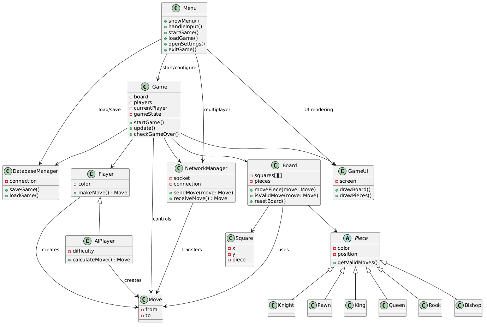
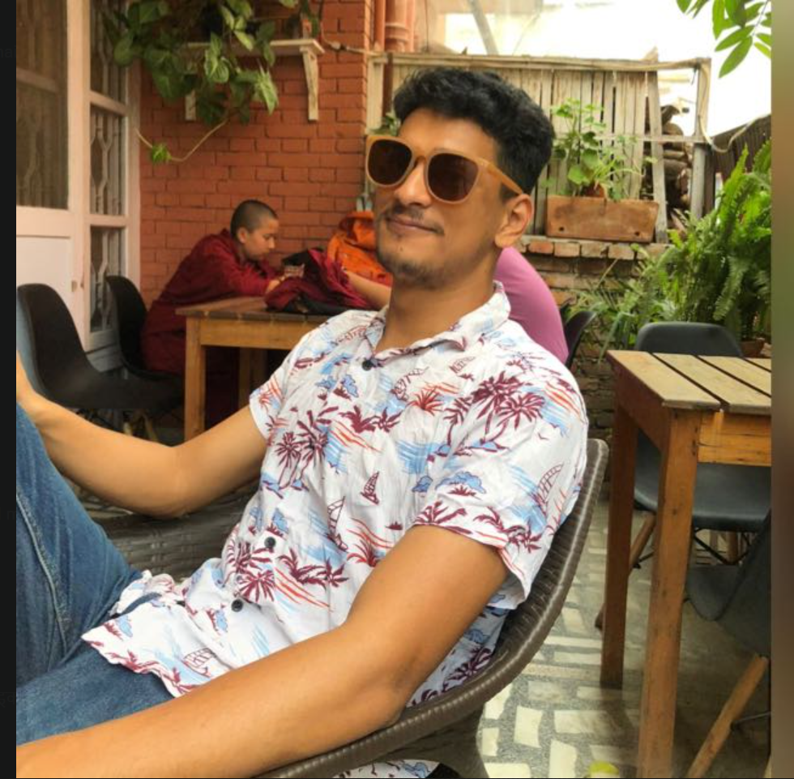
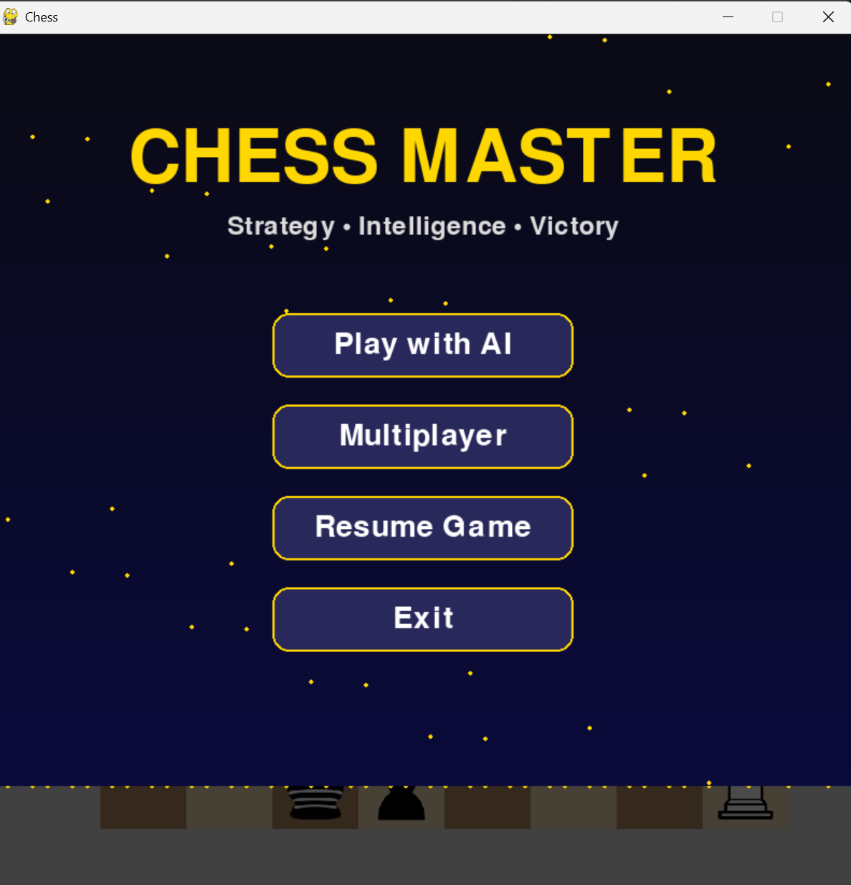

♟
Purpose
The project is a chess game built in Python using Pygame and organized into multiple classes and scenes for a cleaner design.
This project is a Python and Pygame chess game with a menu, game scenes, board logic, piece movement, save/load support, and planned local network multiplayer using sockets.
This page is meant to present the project clearly to teachers and reviewers.
The project is a chess game built in Python using Pygame and organized into multiple classes and scenes for a cleaner design.
The project already includes board drawing, piece setup, movement logic, turn handling, menu flow, and a save system.
The next goal is local multiplayer over LAN using sockets, plus testing and polish before the final submission.
A short summary of why the project is realistic and how it will be delivered.
Python and Pygame are suitable for the game interface and chess logic, while sockets can handle LAN multiplayer and JSON or SQLite can support saving data.
The work can be completed in phases: board and movement first, then rules, then multiplayer, then save/load and testing, with optional features left out if time is limited.
The project uses free tools such as Python, Pygame, GitHub, sockets, and Windows development machines, so no special paid software is required.
This is object-oriented structure.

The Game and Scene classes control the application flow, menu transitions, and the active game scene.
The Board, Tile, and Piece classes manage piece placement, movement rules, and rendering for each chess piece type.
The SaveSystem stores game state, and the NetworkManager will support send and receive logic for LAN multiplayer.
Keep only the items that are actually finished in your codebase.
A start menu lets the user choose modes such as play, multiplayer, resume, or exit.
The game alternates between white and black turns with piece selection and valid move handling.
The save system is designed to store board state and player turn for later continuation.
This helps show that you have thought about project problems in advance.

Presentation, documentation

Game logic and rules

UI design and testing

Integration and networking
These images show the menu, gameplay, and paused state of the chess project.

Menu screen Game board
Game board
 Paused screen
Paused screen
The final downloadable version can be connected here using a GitHub Release link, a ZIP file, or another direct download URL once the stable build is ready.
Tip: replace the links with your real release page before submission.